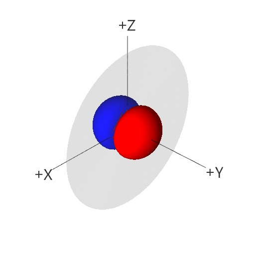

电子排布
前言¶
在初中，我们已经初步了解了原子的结构，即原子由带正电荷的原子核和带负电荷的外围电子组成，其中外围电子呈轨道状分层围绕原子核运动。
在高中，电子的运动状态得到了进一步细化，我们引入了能层、能级与原子轨道等概念来解释电子绕核的运动。
值得一提的是，量子力学的研究表明，电子并不是像行星绕日一样在线性轨道上运行，而是原子核周围空间都有一定概率出现。我们常用电子云来直观描述这种分布。
电子排布分级¶
概念¶
- 电子云：按电子在不同位置出现的概率随机取样得到的结果图
- 电子云轮廓：为了直观展现电子云分布范围，将一个电子出现概率高（通常高于 90%）的区域轮廓称为电子云轮廓
- 能层：按离原子核的平均距离从近到远划分成的若干层级，分别用 K, L, M, N, O, P, Q 表示
- 能级：每一个能层中决定能量高低顺序的不同亚层。同一能层中，第 n 能层中的能级按能量由低至高分别用 ns, np, nd, nf 表示。
- 原子轨道：电子在原子核外的一个空间运动状态。每一个能级都对应着若干能量相等的原子轨道（统称为简并轨道）
- 电子自旋：电子自旋值有两种可能：自旋向上或自旋向下，用上箭头和下箭头表示自旋方向相反的电子。
性质¶
- 电子云中点越密集的地方电子出现的概率越高，越稀疏的地方电子出现的概率越低
- 每一条原子轨道的电子云轮廓图都有不同的形状，例如，s 轨道的轮廓是球形的，p 轨道的轮廓是哑铃状的，其中的三条轨道分别按其轴向命名为 \(p_x\)，\(p_y\)，\(p_z\)。
例：p_y 原子轨道的电子云轮廓图
- 每一个原子轨道 最多 只能容纳 两种 不同 自旋状态的电子（即 泡利原理）
- 每一个能级包含的原子轨道数目是 不同 的；例：s 包含 1 条，p 包含 3 条，d 包含 5 条，f 包含 7 条。
- 电子处于的能层距离原子核 越远，电子的能量 越高。
- 对于处于 高能层低能级 的电子和处于 低能层高能级 的电子，可能会出现 低能层高能级 的电子能量 大于 高能层低能级 的情况，这被称为 能级交错；例：4s 的能量值 < 3d 的能量值
- 第 n 能层包含 n 种能级；例：第 1 能层只包含 1s 能级，第 2 能层只包含 2s, 2p 能级
关系¶
电子排布规律¶
能量最低原理¶
电子排布优先按照使 总体能量从小到大 的方式填充各个能级。
因为（性质 6），电子不一定优先填充低能层高能级的原子轨道，反而会填充高能层低能级的原子轨道。
泡利原理¶
每一个原子轨道最多只能容纳两种不同自旋状态的电子。
洪特规则¶
在能级相同的简并轨道（即一个能级所对应的能量相等的原子轨道中），电子总是优先单独分占每一条轨道，并且自旋方向相同。
基于该规则的推广：简并轨道在全满，半满，和全空状态下能量更低，结构更稳定。
解释
对于半满状态，每一个电子各占一个原子轨道。
对于全满状态，每两个电子共占一个原子轨道。
根据洪特规则，这样的电子排布能量更低。
这会带来一些不寻常的电子排布方式，例如：铜（\(4s^1 3d^{10}\)），铬（\(4s^1 3d^5\)）。
以铬为例，若不考虑洪特规则的特例，其电子排布按正常填充顺序本应为 \(4s^2 3d^4\)。但实验测定其基态排布为 \(4s^1 3d^5\)——此时 4s 轨道半满、3d 轨道半满，整个体系能量更低、更稳定。铜的 \(4s^1 3d^{10}\) 排布（3d 全满、4s 半满）也是同理。